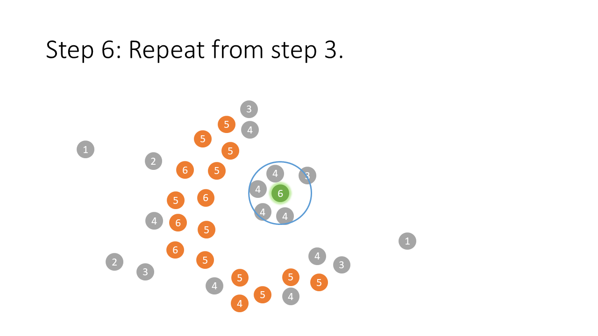
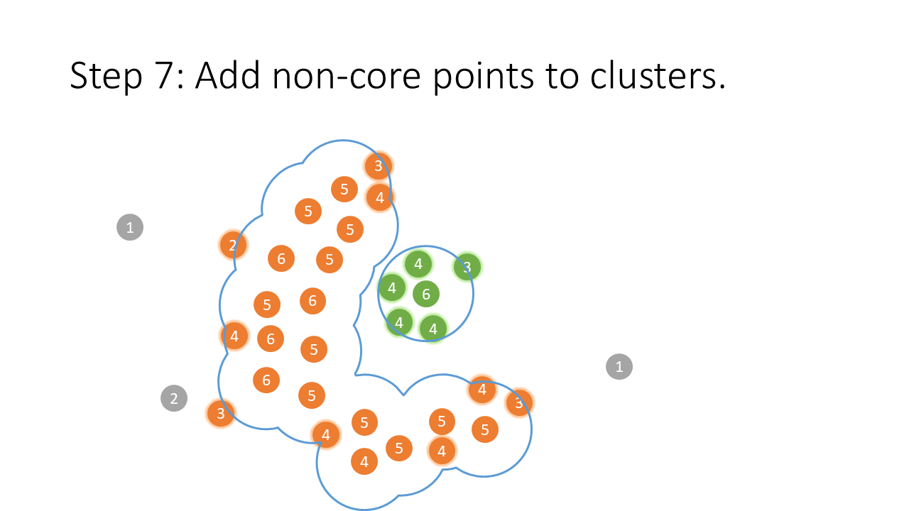
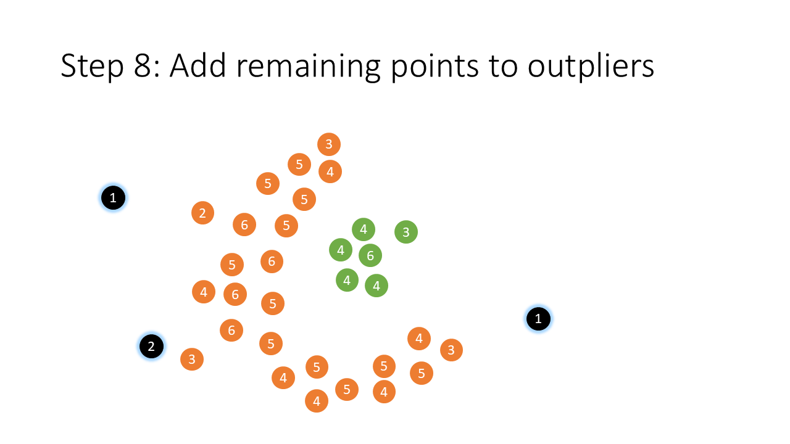
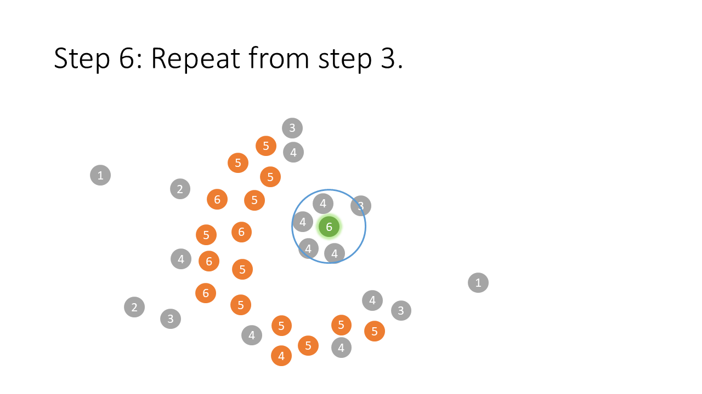
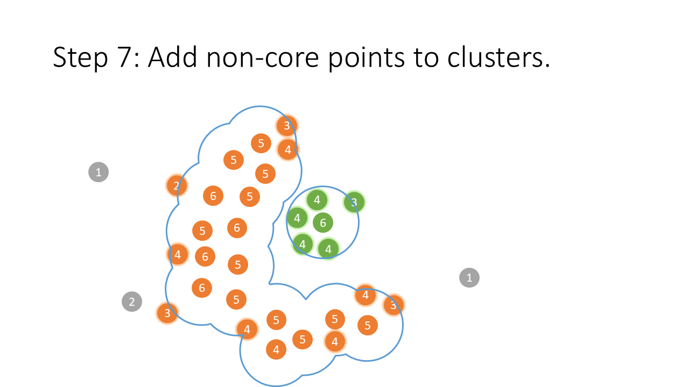
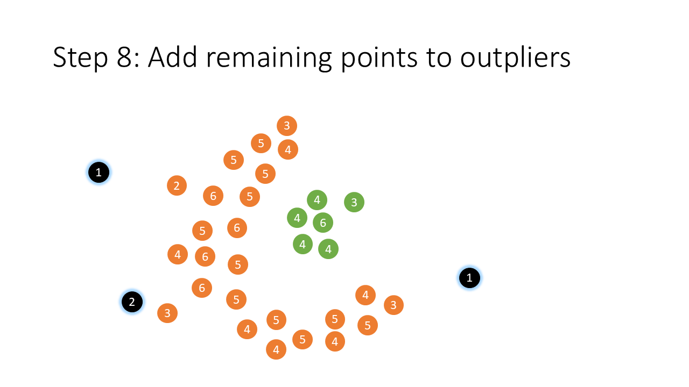

1
2
3
4
5
6
7
8
9
10
11
12
13
14
15
16
17
18
19
20
21
22
23
24
25
26
27
28
29
30
31
32
33
34
35
36
37
38
39
40
41
42
43
44
45
46
47
48
49
50
51
52
53
54
55
56
57
58
59
60
61
62
63
64
65
66
67
68
69
70
71
72
73
74
75
76
77
78
79
80
81
82
83
84
85
86
87
88
89
90
91
92
93
94
95
96
97
98
99
100
101
102
103
104
105
106
107
108
109
110
111
112
113
114
115
116
117
118
119
120
121
122
123
124
125
126
127
128
129
130
131
132
133
134
135
136
137
138
139
140
141
142
143
144
145
146
147
148
149
150
151
152
153
154
155
156
157
158
159
160
161
162
163
164
165
166
167
168
169
170
171
172
173
174
175
176
177
178
179
180
181
182
183
184
185
186
187
188
189
190
191
192
193
194
195
196
197
198
199
200
201
202
203
204
205
206
207
208
209
210
211
212
213
214
215
216
217
218
219
220
221 | from sklearn.base import BaseEstimator, ClusterMixin
from scipy.spatial import distance_matrix
import numpy as np
import matplotlib.pyplot as plt
def merge_intersecting_sets(dict_of_sets):
"""
Diese Funktion vereinigt Mengen aus einem Dictionary, falls sich zwei Mengen überschneiden.
Dabei wird iterativ geprüft, bis keine weiteren Vereinigungen mehr möglich sind.
"""
# Extrahiere alle Mengen als Liste
sets_list = list(dict_of_sets.values())
changed = True
while changed:
changed = False
new_sets = []
# Nimm solange Mengen aus der Liste, bis diese leer ist
while sets_list:
current_set = sets_list.pop(0)
i = 0
# Vergleiche current_set mit jeder weiteren Menge
while i < len(sets_list):
# Falls ein Schnitt vorhanden ist, vereinige die Mengen
if current_set.intersection(sets_list[i]):
current_set |= sets_list.pop(i)
changed = True # Es gab eine Änderung, erneute Prüfung nötig
else:
i += 1
new_sets.append(current_set)
sets_list = new_sets
return sets_list
class MyDBScan(BaseEstimator, ClusterMixin):
"""
Eigene Implementierung des DBSCAN-Algorithmus.
Parameter:
- eps: Abstandsschwelle, ab der zwei Punkte als Nachbarn gelten.
- min_samples: Mindestanzahl an Punkten in der eps-Umgebung, um einen Kernpunkt zu definieren.
"""
def __init__(self, eps=0.5, min_samples=5):
self.eps = eps
self.min_samples = min_samples
def fit(self, X, y=None):
"""
Führt das Clustering auf den Daten X durch.
"""
n_samples = X.shape[0]
# Berechne die paarweise Distanzmatrix
dist_matrix = distance_matrix(X, X)
# Bestimme für jeden Punkt p die Menge der Nachbarn (Indices), die innerhalb von eps liegen
neighbors = {
p: {i for i in range(n_samples) if self.is_neighbor(i, p, dist_matrix)}
for p in range(n_samples)
}
# Zähle die Anzahl der Nachbarn für jeden Punkt
count_neighbors = {p: len(neighbors[p]) for p in neighbors.keys()}
# Bestimme die Kernpunkte: Punkte mit mindestens min_samples Nachbarn
core_point_indices = {p for p in neighbors.keys() if count_neighbors[p] >= self.min_samples}
# Für jeden Kernpunkt: Behalte nur die Nachbarn, die ebenfalls Kernpunkte sind
cp_neighbors_cp = {
p: core_point_indices.intersection(neighbors[p])
for p in core_point_indices
}
# Vereinige alle Kernpunkte, die direkt miteinander verbunden sind
cp_clusters = merge_intersecting_sets(cp_neighbors_cp)
# Erweitere jeden Cluster: Füge auch alle Punkte hinzu, die in der eps-Umgebung
# eines Kernpunkts liegen (auch wenn sie selbst keine Kernpunkte sind)
for cluster in cp_clusters:
for cp in list(cluster):
cluster.update(neighbors[cp])
# Alle in Clustern enthaltenen Punkte
all_clustered_elements = {x for c in cp_clusters for x in c}
# Punkte, die in keinem Cluster landen, werden als Rauschen betrachtet (Label -1)
not_clustered = set(range(n_samples)) - all_clustered_elements
# Erstelle ein Dictionary, in dem jeder Cluster (mit einem eindeutigen Index) zugeordnet wird
self.clusters = {i: c for i, c in enumerate(cp_clusters)}
self.clusters[-1] = not_clustered
# Erzeuge für jeden Punkt das zugehörige Label anhand des Clusters, in dem er enthalten ist
self.labels_ = [self.get_cluster(i) for i in range(n_samples)]
return self
def get_cluster(self, i):
"""
Gibt das Cluster-Label des Punktes i zurück. Falls i in keinem Cluster ist, wird -1 zurückgegeben.
"""
for cluster_label, cluster in self.clusters.items():
if i in cluster:
return cluster_label
return -1
def is_neighbor(self, i, j, dist_matrix):
"""
Prüft, ob Punkt i und Punkt j Nachbarn sind, also ob ihr Abstand kleiner als eps ist.
"""
return dist_matrix[i, j] < self.eps
def predict(self, X):
"""
Da DBSCAN ein "fit-and-predict"-Ansatz ist, werden hier bereits berechnete Labels zurückgegeben.
(Für neue Daten müsste man weitere Berechnungen durchführen.)
"""
return self.labels_
# -------------------------------
# Beispiel-Visualisierung der Cluster
# -------------------------------
if __name__ == '__main__':
# Für reproduzierbare Ergebnisse setzen wir einen Seed
np.random.seed(42)
# Anzahl der Punkte pro Cluster
n_points = 100
# Erstellen von drei Clustern im 2D-Raum mit unterschiedlichen Zentren
cluster_1 = np.random.randn(n_points, 2) + np.array([0, 0])
cluster_2 = np.random.randn(n_points, 2) + np.array([5, 5])
cluster_3 = np.random.randn(n_points, 2) + np.array([0, 5])
# Kombiniere alle Cluster zu einem Array
X = np.vstack((cluster_1, cluster_2, cluster_3))
# Erzeuge das DBSCAN-Modell (Parameter ggf. anpassen)
model = MyDBScan(eps=0.75, min_samples=5)
model.fit(X)
# Ausgabe der Labels für jeden Datenpunkt
print("Cluster-Labels:", model.labels_)
# Visualisierung: Farbgebung anhand der Clusterzugehörigkeit (Cluster -1 = Rauschen)
# plt.figure(figsize=(8, 6))
# plt.scatter(X[:, 0], X[:, 1], c=model.labels_, cmap='viridis', s=30)
# plt.title("DBSCAN Clustering")
# plt.xlabel("X-Achse")
# plt.ylabel("Y-Achse")
# plt.grid(True)
# plt.show()
# -------------------------------
# Beispieltests für MyDBScan
# -------------------------------
def test_dbscan_zwei_cluster_mit_rauschen():
"""
Test: Zwei gut getrennte Cluster und ein einzelner Rauschpunkt.
Erwartung:
- Punkte aus den Clustern erhalten konsistente (unterschiedliche) Labels (nicht -1).
- Der Rauschpunkt erhält Label -1.
"""
np.random.seed(0)
# Erzeuge zwei Cluster
cluster1 = np.random.randn(20, 2) + np.array([0, 0])
cluster2 = np.random.randn(20, 2) + np.array([10, 10])
# Ein einzelner Rauschpunkt, der weder nahe zu Cluster 1 noch Cluster 2 liegt
noise = np.array([[5, 5]])
X_test = np.vstack([cluster1, cluster2, noise])
# Wähle eps so, dass die beiden Cluster erkannt werden, der Noise aber nicht dazugehört
model = MyDBScan(eps=2.5, min_samples=3)
model.fit(X_test)
labels = np.array(model.labels_)
# Cluster 1: Indizes 0 bis 19
label_cluster1 = labels[0]
# Cluster 2: Indizes 20 bis 39
label_cluster2 = labels[20]
# Prüfe, dass beide Cluster nicht als Rauschen (Label -1) markiert wurden
assert label_cluster1 != -1, "Cluster 1 sollte kein Rauschen sein."
assert label_cluster2 != -1, "Cluster 2 sollte kein Rauschen sein."
# Alle Punkte in Cluster 1 sollten dasselbe Label haben
for i in range(20):
assert labels[i] == label_cluster1, "Nicht alle Punkte in Cluster 1 haben dasselbe Label."
# Alle Punkte in Cluster 2 sollten dasselbe Label haben
for i in range(20, 40):
assert labels[i] == label_cluster2, "Nicht alle Punkte in Cluster 2 haben dasselbe Label."
# Der Rauschpunkt (Index 40) sollte als Rauschen markiert sein (-1)
assert labels[40] == -1, "Der Rauschpunkt sollte das Label -1 erhalten."
print("Test 'test_dbscan_zwei_cluster_mit_rauschen' erfolgreich bestanden.")
def test_dbscan_alle_punkte_cluster():
"""
Test: Alle Punkte liegen in einem dichten Cluster.
Erwartung:
- Alle Punkte erhalten dasselbe Cluster-Label.
"""
np.random.seed(1)
X_dense = np.random.randn(50, 2) # dichter Cluster
model = MyDBScan(eps=2.0, min_samples=3)
model.fit(X_dense)
labels = np.array(model.labels_)
# Alle Labels sollten gleich sein und nicht -1 (kein Rauschen)
unique_labels = np.unique(labels)
assert len(unique_labels) == 1 and unique_labels[0] != -1, "Alle Punkte sollten in einem Cluster sein."
print("Test 'test_dbscan_alle_punkte_cluster' erfolgreich bestanden.")
if __name__ == '__main__':
# Führe die Tests aus
test_dbscan_zwei_cluster_mit_rauschen()
test_dbscan_alle_punkte_cluster()
|
 




